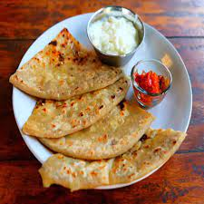

ALLO_PARATHA

Description
Allo paratha is an Indian dish made by potato which is also known as "Allo" in nidia and Wheat Flour
First a dough is prepard of flour by mixing water to it then potatos are boiled and mashed thoroughly after that several spices are added in the mashed potato
And finally dough is rolled flat and it gets stuffed with the potato mash and after that it goes on to the pan and woof paratha is ready
INGRIDIENTS
- Whole wheat Flour
- Water
- Salt
- Potatoes
- Finely Chopped Onions
- Garam Masala
- Fresh Coriander Leaves
Steps
- Prepare the dough:
- In a mixing bowl, combine the whole wheat flour, salt, and oil or ghee.
- Gradually add water and knead to form a soft dough.
- Cover the dough and let it rest for about 15-20 minutes.
- Prepare the potato filling:
- In a separate bowl, mix together the mashed potatoes, chopped onions, green chilies, coriander leaves, red chili powder, ground cumin, garam masala, and salt.
- Mix well until all the spices are evenly incorporated into the potato mixture.
- Shape the parathas:
- Divide the dough into equal-sized portions and roll them into balls.
- Take one dough ball and flatten it with your hands.
- Dust it with flour and roll it out into a small circle.
- Stuff and seal the parathas:
- Place a spoonful of the potato filling in the center of the rolled-out dough circle.
- Gather the edges of the dough and bring them together to enclose the filling.
- Pinch off the excess dough and seal the edges.
- Roll out the parathas:
- Dust the stuffed dough ball with flour and gently roll it out into a round paratha, about 6-7 inches in diameter.
- Take care not to apply too much pressure while rolling to prevent the filling from coming out.
- Cook the parathas:
- Heat a tawa (griddle) or a non-stick pan over medium hea
- Place the rolled paratha on the heated tawa.
- Flip the paratha and spread a little oil or ghee on the cooked side.
- Continue cooking and flipping until both sides are golden brown and cooked evenly.
- When the paratha is cooked properly servet the paratha and enjoy!
ENJOY!!!
<--back